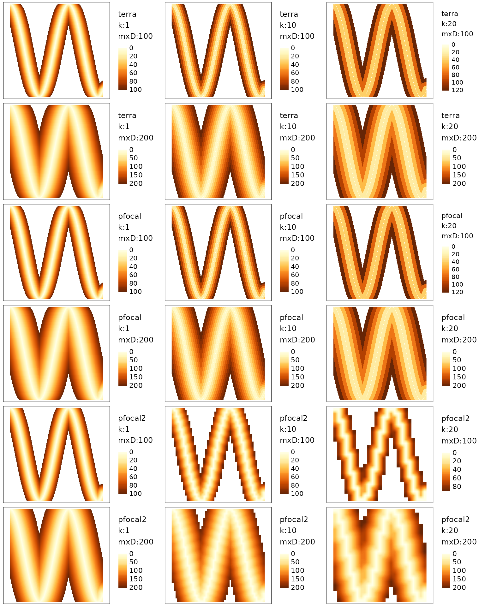
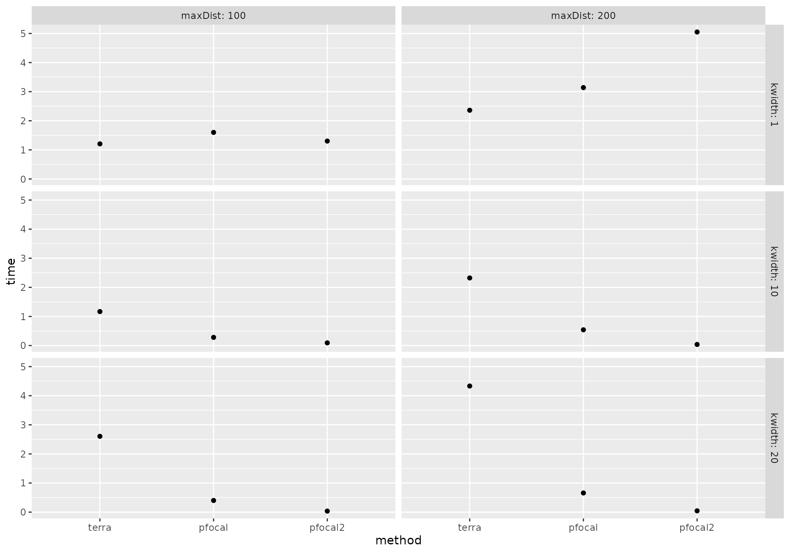

library(roads)
library(ggplot2)
library(dplyr)
#>
#> Attaching package: 'dplyr'
#> The following objects are masked from 'package:stats':
#>
#> filter, lag
#> The following objects are masked from 'package:base':
#>
#> intersect, setdiff, setequal, uniongetDistFromSource allows you to calculate the distance
to the closest “source” location for all cells in a raster. A source is
a raster cell with a value > 0 in the input raster. In the case of
this package the source is typically a road.
getDistFromSource includes three slightly different methods
that are all based on a moving window approach.
Note: the development version of roads is needed
to run the following code
The “terra” and “pfocal” methods use an iterative moving window
approach and assign each cell a distance based on the number of times
the moving window is repeated before it is included. This means that the
moving window function is run many times but for a small window relative
to the size of the raster. The maxDist argument determines
the maximum distance calculated and affects the number of iterations of
the moving window that are needed. kwidth is the radius of
the moving window in number of cells, with larger values reducing the
number of iterations needed but also reducing the granularity of the
distances produced. The resulting distances will be in increments of
kwidth * the resolution of the raster. The total number of
iterations is maxDist/ kwidth * resolution.
The only difference in these methods is the underlying package used to
do the moving window. The terra package has methods for
handling large rasters by writing them to disk, while the
pfocal package requires that the raster can be held in
memory as a matrix.
The third method “pfocal2” uses a global moving window to calculate
the distance to the source. This means that the moving window only needs
to be applied once but the window size can be very large. In this case
maxDist determines the total size of the window.
kwidth can be used to reduce the number of cells included
in the moving window by aggregating the source raster by a factor of
kwidth. This will increase the speed of computation but
will produce results with artefacts of the larger grid and which may be
less accurate since the output raster is disaggregated using bilinear
interpolation.
Below we will explore different settings and how they affect the
speed and memory usage as well as the resulting distance map. The code
below creates a source raster showing a curving road and applies the
getDistToSource function under different parameters.
#make example roads from scratch
rds <- data.frame(x = 1:1000, y = cos(1:1000/100)*500) %>%
sf::st_as_sf(coords = c("x", "y")) %>%
sf::st_union() %>%
sf::st_cast("LINESTRING")
rds_rast <- terra::rasterize(terra::vect(rds),
terra::rast(nrows = 500, ncols = 500,
xmin = 0, xmax = 1000,
ymin = -500, ymax = 500),
touches = TRUE) %>%
terra::`crs<-`(value = "+proj=utm +zone=12")
# table of different parameters
param_grid <- expand.grid(kwidth = c(1,10,20), maxDist = c(100, 200), method = c("terra", "pfocal", "pfocal2")) %>%
#mutate(kwidth = ifelse(method == "pfocal2", 0, kwidth)) %>%
distinct() %>%
mutate(result = vector("list", length = n()), time = vector("numeric", length = n()),
mem_alloc = vector("numeric", length = n()),
nm = paste0(method, ", k:", kwidth, ", mxD:",
maxDist))
# function to run each version and save the results
doFun <- function(x){
bm <- bench::mark(
param_grid$result[[x]] <<- getDistFromSource(rds_rast, param_grid$maxDist[x],
kwidth = param_grid$kwidth[x],
method = param_grid$method[x]),
iterations = 1, filter_gc = FALSE
)
param_grid$time[x] <<- bm$median
param_grid$mem_alloc[x] <<- bm$mem_alloc
}
# iterate over all parameters
purrr::walk(1:nrow(param_grid), doFun)
# all maps
all_maps <- purrr::map(1:nrow(param_grid),
~tmap::qtm(param_grid$result[[.x]], raster.style = "cont",
title = gsub(", ", "\\\n", param_grid$nm[.x]),
raster.title = "",
legend.outside = TRUE,
layout.title.position = c("left", "TOP"),
layout.title.snap.to.legend = FALSE))
#> The legacy packages maptools, rgdal, and rgeos, underpinning the sp package,
#> which was just loaded, will retire in October 2023.
#> Please refer to R-spatial evolution reports for details, especially
#> https://r-spatial.org/r/2023/05/15/evolution4.html.
#> It may be desirable to make the sf package available;
#> package maintainers should consider adding sf to Suggests:.
#> The sp package is now running under evolution status 2
#> (status 2 uses the sf package in place of rgdal)
tmap::tmap_arrange(all_maps, ncol = 3)
The maps above show the affect of the different parameters with
maxDist changing the area covered, kwidth
changing the smoothness of the gradations for the “terra” and “pfocal”
methods and causing grid artefacts for the “pfocal2” method.
get_hist <- function(rast){
f <- terra::hist(rast, plot = FALSE, breaks = 30)
dat <- data.frame(counts= f$counts,breaks = f$mids)
}
purrr::map_dfr(1:nrow(param_grid),
~get_hist(param_grid$result[[.x]]), .id = "row_id") %>%
left_join(param_grid %>% mutate(row_id = as.character(1:n())), by = "row_id") %>%
ggplot(aes(x = breaks, y = counts)) +
geom_bar(stat = "identity",fill='blue',alpha = 0.8)+
xlab("Distance")+ ylab("Frequency")+
facet_grid(method +maxDist ~ kwidth, labeller = label_both)Looking at histograms of the raster values shows the larger steps
between distance values as kwidth increases for the “terra”
and “pfocal” methods. For the “pfocal2” method the frequency of distance
values stays similar with higher values of kwidth but the
maps above show that some spatial accuracy is lost due to the
aggregation and disaggregation processes.
param_grid %>%
ggplot( aes(x = method, y = time))+
geom_point()+
facet_grid(kwidth~maxDist, labeller = label_both)
param_grid %>%
ggplot( aes(x = method, y = mem_alloc))+
geom_point()+
facet_grid(kwidth~maxDist, labeller = label_both)The last two graphs show that the “pfocal2” method is fastest in all
the cases shown, however for very high maxDist values this
may not be the case. The “pfocal” method uses the most memory of all the
methods but note that this is the total memory allocated and does not
account for deallocated memory, meaning not all the memory allocated is
used at once.
This vignette demonstrates the different trade offs that should be considered in choosing the correct method to calculate distance to a source.